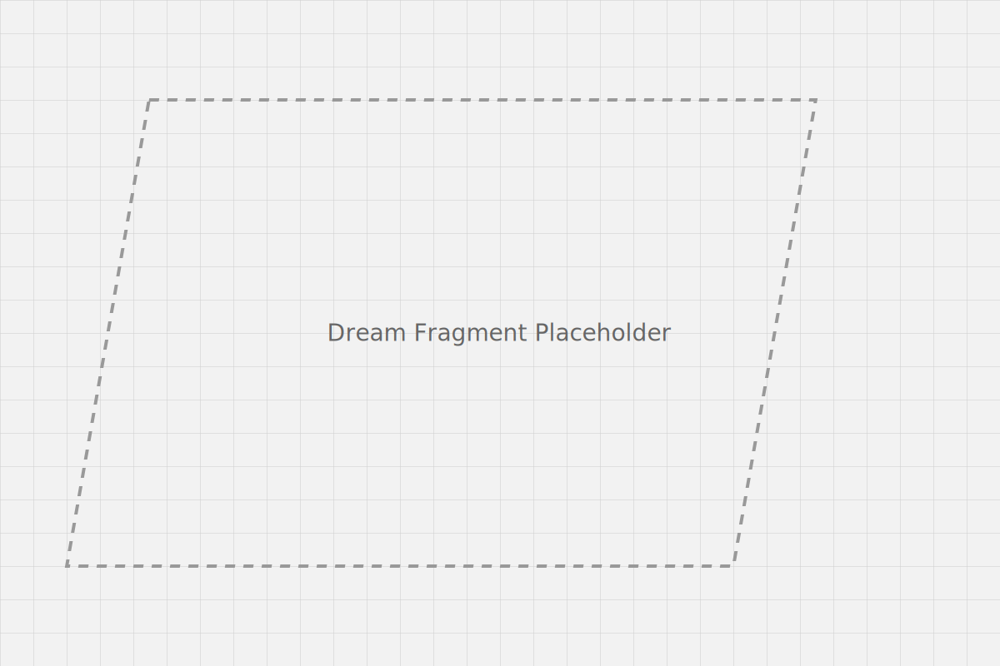

Dream Subconscious
Surreal Landscapes
Human Dream Fragments
Nightmares & Chaos
Nightmares & Chaos
Enter Chaos
Fear Reveal (Hold)
Press “P” to toggle Panic

Night keeps you hidden between its teeth.
Waking is another kind of fall.